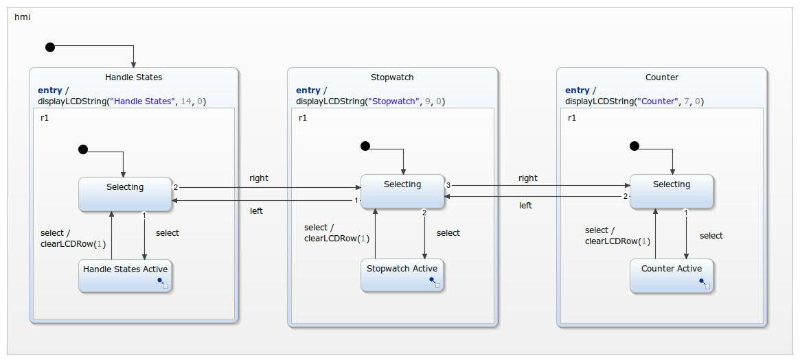

Expandable HMI example for Arduino using a 16x2 LCD Keypad Shield.

The full example description can be found on Instructables. For compiling and flashing the Eclipse Arduino C++ IDE has been used.
This video shows the running application:
This video shows how to simulate the state machine: